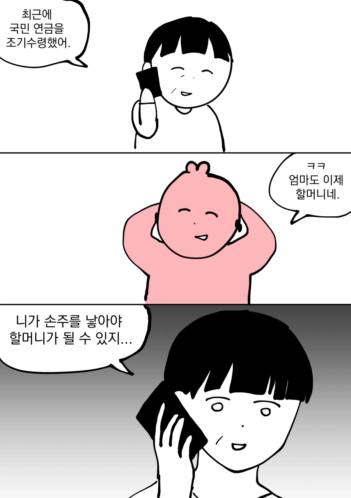

할머니 소리를 못들어봤다

할머니 소리를 못들어봤다
100살먹어도 할머니 안되는 방법 ㄷㄷ
그런 논리면 평생 처녀로 살다 갈수도 있지
실제로 가능
어머니 60이면 자식은 30~35쯤 되나
요새 노처녀 개많긴해
엄마.. 빡치다!
다음주 휴재애애앳!!!
딸 너 이새끼...
엄마미안해ㅐㅐㅐㅐ
아아 이건 '미시'다
미안해..
할머니는 선택받은 자 만이 될 수 있다..
하하. 이번주 우리엄마 칠순이지만 여전히 할머니가 아니지.
진짜 40대 무결혼 자식 보고 있는 부모 심정은 어떤 느낌일까
미안하다...
한두명도아니고 주변에 은근히많아서 별 생각 안들듯?
주변에 많지만 손주있는사람도 무조건있어서 생각많이든다 ㅠ
앗....엄마 미안 제발 잔소리 그만...!!
다음화 딸 죽다
영원한 아줌마..